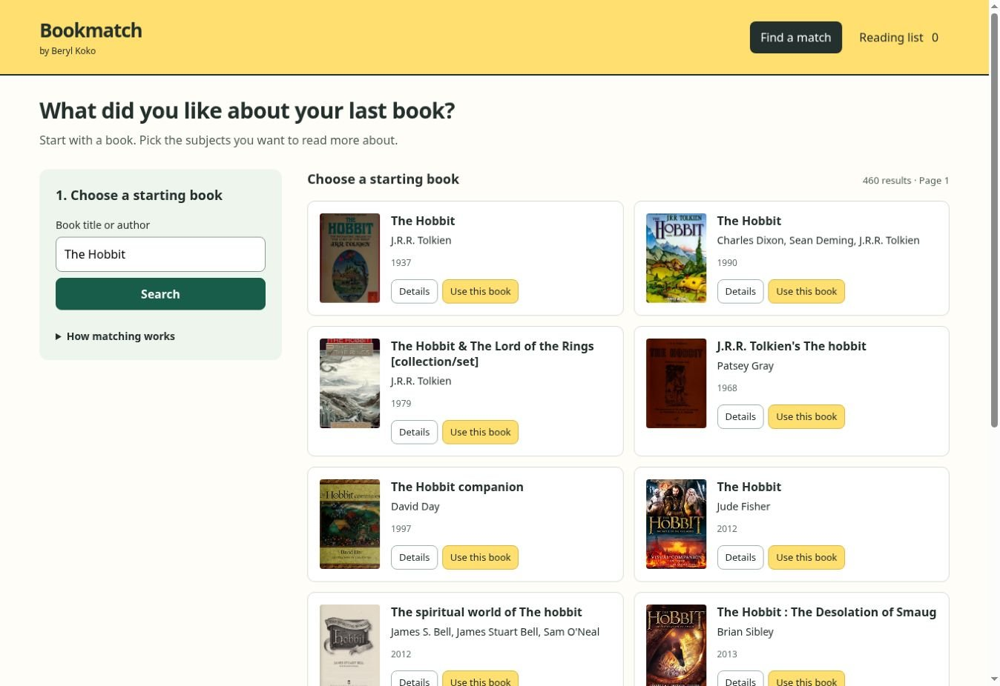
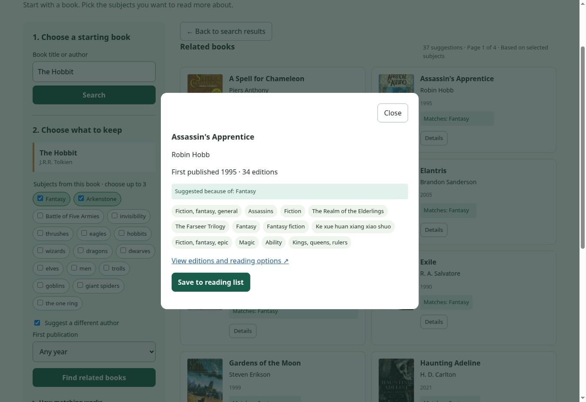
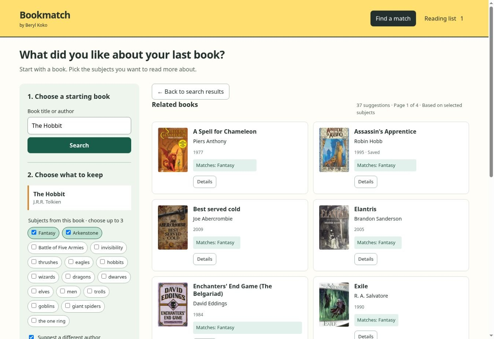

Retrieve broadly, but with bounds.
Query variants cover related vocabulary. Broad categories such as sports can fan out into concrete sports without becoming an unlimited search.
Product build · Flask · JavaScript · REST APIs
Book discovery beyond a title search: preferences, readable matches and a place to save the next read.

Bookmatch started from the kind of request readers actually make: “I want romance + sports,” “give me found family with fantasy,” or “something like this book, but with a different trope.” The product needed to turn combinations of interests into results that still felt explainable.

Results are ranked, paginated and filterable. Match information gives the reader a reason a book appeared; author and year filters narrow a larger set without throwing away the original preference combination.

A reader can inspect description, author, publication information and source links without losing the result set. Missing metadata is treated as normal catalog mess rather than an exceptional state.
02 / Recommendation logic
The ranking layer checks the evidence around each candidate instead of treating every retrieved title as equally relevant.
Query variants cover related vocabulary. Broad categories such as sports can fan out into concrete sports without becoming an unlimited search.
ISBN is preferred when available; matching title + author provides a fallback so the same book does not dominate the list as separate records.
Descriptions and targeted relevance can support a trope or pairing. A fuzzy query hit by itself is not enough proof.
Books that satisfy more of the selected concepts rank ahead, while missing-concept information makes a partial result legible instead of mysterious.
Cover and metadata fallbacks keep sparse catalog records usable.
Catalog requests are handled so one bad response does not automatically collapse the whole experience.
Readers can narrow by author/year and move through results without one giant wall of cards.
Saving a book does not require creating an account.

I built the Flask application and JavaScript interface, including the search/discovery flows, ranking behavior, details, filtering, pagination, caching, loading/error/empty states and reading-list persistence. Regression tests cover the places where recommendation products quietly go wrong: duplicate records, exact-title relevance, false-positive concept matches, page validation and missing metadata.
Finished experience

Web design · Front-end development
A warm, responsive event guide that connects the festival atmosphere with the details of a visit.
Explore case study →